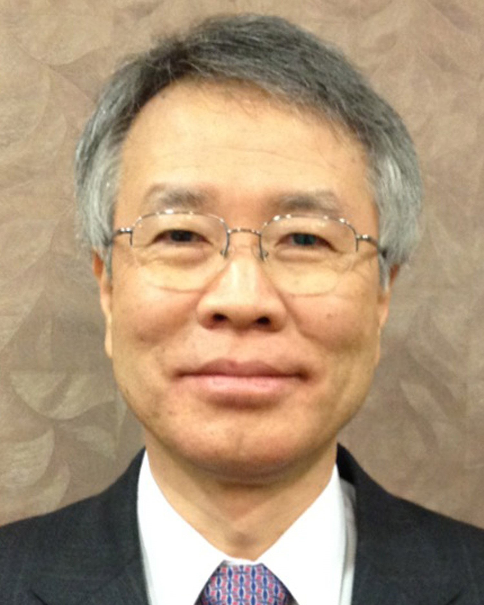

황규영 교수 (KAIST 특훈교수, 2008.5 - 2021.8) |
|  | 305-701 대전광역시 유성구 구성동 373-1
한국과학기술원 전산학과 전화: 042-350-3522
|
[ 수상 경력 || 학술 활동 || 논문 || 초청 강연 || 연구 분야 및 과제 || 주요 연구 과제 || 졸업생 ]
 학력
학력| 1984 | Ph.D. | 스탠포드 대학, EE/CSL |
| 1982 | M.S. | 스탠포드 대학, EE/CSL |
| 1975 | M.S. | 한국과학기술원 전기 및 전자학과 |
| 1973 | B.S. | 서울대학교 공과대학 전자공학과 |
경력| 2018-현재 | 대한민국학술원 회원 |
| 2008-2021 | KAIST 특훈교수 |
| 2016-현재 | DGIST 초빙석좌교수 |
| 2016-현재 | 한국과학기술원 전산학부 명예교수 |
| 1990-2016 | 한국과학기술원 전산학부 부교수/교수(교수 1994-2016) |
| 1999-2016 | 첨단정보기술연구센터 (한국과학재단(KOSEF)/과학기술부 우수연구센터) 소장 |
| 1998-1999 | 한국과학기술원 종합정보본부장 겸 과학도서관장 |
| 1995-1997 | 한국과학기술원 전산학과 학과장 |
| 1983-1991 | IBM T.J. Watson Research Center, Research Staff Member |
| 1975-1978 | 국방과학연구소, 선임 연구원 |
관심 분야 강의
Details 주요 수상 경력 주요 학술 활동 전체 목록 주요 논문
저널 및 학술대회 논문 (Selected)
특허
기조 연설
전체목록 초청 강연
전체목록 주요 연구과제
전체목록
| 제안이나 요구사항을
webmaster@dblab.kaist.ac.kr
로 보내주시기 바랍니다.
최종 수정일: 2022년 4월 11일 |
 |